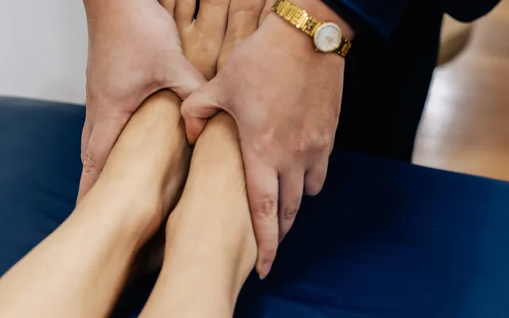
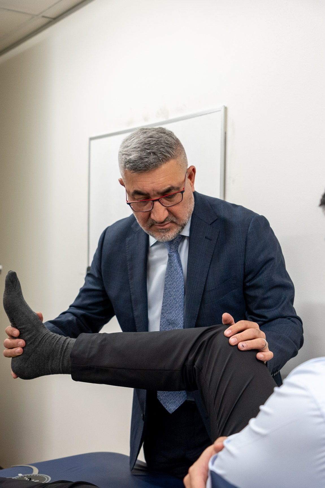
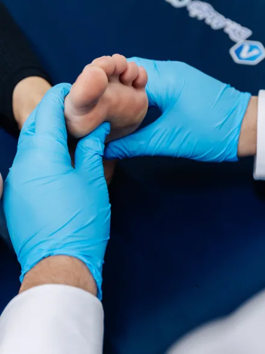
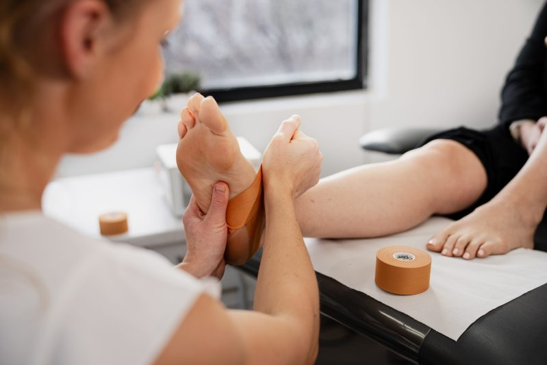
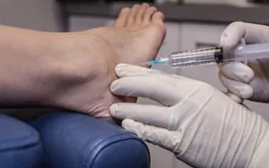
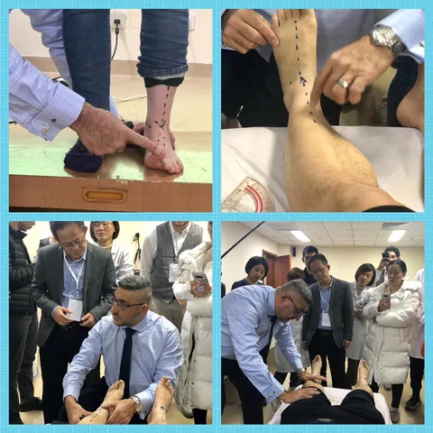
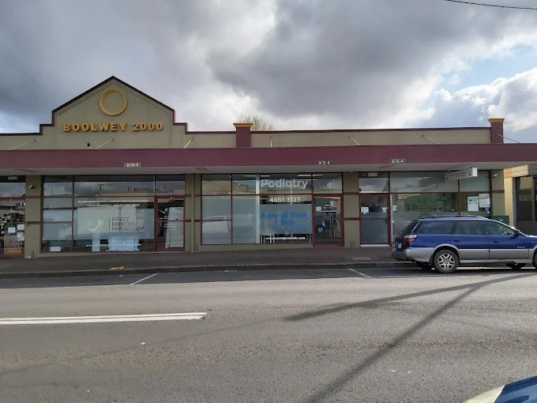

Meet the Team
The Bowral Foot Clinic is committed to relieving your foot ailments effectively, efficiently, and comfortably no matter how small or complex the issue is.


Google reviews
Selected reviews from our Google Maps listing.
-
Can't recommend highly enough. Honest, keeps to appointment times, great with kids and adults alike, very reasonably priced. Wouldn't go anywhere else.
Response from the owner
Hi Fofe, thank you so much for your wonderful feedback! We’re delighted to hear you value our honesty, punctuality, and care for both kids and adults. Your recommendation means a lot to us, and we’re grateful for your trust in our clinic.
-
Consistantly a great friendly and professional service.
Response from the owner
Hi Rachel, thank you for your lovely feedback! We’re so glad to hear you’ve consistently experienced friendly and professional care at our clinic. Your continued trust means a lot to us, and we look forward to seeing you again soon.
-
Bowral on Google Maps
5.0View all reviews on Google
Problems we treat
Find information about common foot, ankle and lower limb concerns.

Heel PainPlantar fasciitis and other causesExplore heel pain- Children’s Foot ProblemsFlat feet, gait and growing pains
- Diabetic Foot CareFoot checks and wound care
- Foot & Ankle InjuriesFoot and ankle pain or injury
- Knee, Hip & Back PainLower limb assessments for recurring pain
- Toenail ProblemsIngrown, fungal or injured nails
See more conditions
- Corns and Calluses
- Ingrown Toe Nails
- Fungal Nails
- Arthritis
- Ball of Foot Pain
- Plantar Warts
- Hammer Toes
- Plantar Fasciitis
- Achillies Tendinopathy
- Sever's Disease
- Osgood Schlatters Disease
- Pigeon Toe and Out Toe
- Heel Pain and Heel Spurs
- Cracked Heels and dry skin
- Knee Pain and Injuries
- Neuromas
- Hip Pain and Lower back pain
- Shin Pain
- Flat Feet
- Bunions
- Shin Splints
- High Arches
- Childrens Conditions
- Growing Pains in children
Local foot care for every age
From our first practice on Mona Road to our clinic on Boolwey Street, we’ve cared for adults and children across Bowral and the Southern Highlands.
We provide routine foot care and assess how your feet and legs move. Our focus is prevention and identifying problems early.
About the clinic Visit us on Boolwey StreetShop 3, 2-4 Boolwey Street, BowralRange of services
Explore podiatry services available at our Bowral clinic.

BiomechanicsLower limb, gait and posture assessments Children's PodiatryFoot and lower limb care for children
Children's PodiatryFoot and lower limb care for children
 Custom OrthoticsOrthotics prescribed for your feet
Sports PodiatryCare for sports and overuse injuries
Custom OrthoticsOrthotics prescribed for your feet
Sports PodiatryCare for sports and overuse injuries
 Shockwave TherapyA treatment option for persistent pain
Shockwave TherapyA treatment option for persistent pain
 Dry NeedlingA technique used in soft tissue care
Dry NeedlingA technique used in soft tissue care

Foot MobilisationsHands-on work for foot joint movement
StrappingSupport for feet and ankles
Neural TherapyExplore this injection therapy service
ProlotherapyLearn about prolotherapy at Bowral General Foot CareNails, corns, calluses and routine care Partial nail avulsion (PNA)An option for ingrown toenails Onyfix nail correctionNail correction treatment Wart removalCare for plantar wartsSee our full range of care
- Biomechanical Assessments
- Gait Analysis
- Children's Podiatry
- Prolotherapy
- Diabetic Foot Assessment
- Dry Needling
- Strengthening and Stretching
- Shockwave Therapy
- Wart Treatment
- Foot Mobilisation Therapy
- General Podiatry and Foot Health
- Orthotic Therapy
- Injection Therapy
- Custom Orthotics
- Nail Cutting and Callus removal
- Ulcer care and wound treatment
Before you book with us
What Is A Podiatrist?
A Podiatrist is a doctor of Podiatric Medicine and is an expert in the foot, ankle and lower limb health.
Do I Need A Referral To See A Podiatrist?
No, you do not need a referral to see a podiatrist. You will only need a referral if you are with the Department of Veteran Affairs or Workers Compensation. The Bowral Foot Clinic does not Bulk Bill, but EPCs from your GP are happily accepted with gap payment.
Will My Private Health Insurance Cover Podiatry?
Yes, most private health insurance’s will cover some podiatry. It is important that you have checked your cover prior to the scheduled appointment as it may affect your rebate.
Visit us in Bowral
Opening hours
- Monday to Friday
- 8:30 am to 5:30 pm
- Saturday
- 8:30 am to 12 pm
- Sunday
- Closed
